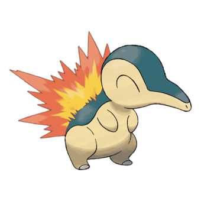
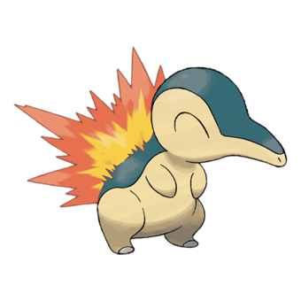
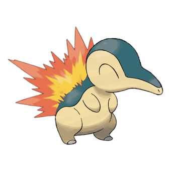

Welkom bij de pokédex,
Iedere generatie heeft zijn eigen pokédex,
maar dat betekent niet dat al die pokémon van die generatie zijn.
Iedere generatie voegde toe aan de national-dex.
Wij delen alle toegevoegde pokemon in categorieën en zetten de generaties in een lijst van eerste tot achtste.
Starters
Starters,
Iedereens pokémon avontuur begint bij het kiezen van hun eerste pokémon.
Deze keuze is vaak moeilijk omdat op een console maar een save mogelijk is.
Maar met de Switch is het nu mogelijk een nieuw account aan te maken en een nieuwe starter kiezen.
Dan heb je dus de keuze over 3 pokémon.
Grass, Fire en Water, drie pokémon types die samen een van vele driehoeken vormen.
Maar welke generatie pokémon heeft de beste starters?
Beste starters gerangschikt op generatie:
Gen 1
Gen 4
Gen 3
Gen 8
Gen 7
Gen 5
Gen 6
Gen 2
Op laatste plaats hebben we generatie 2: Gold en Silver met Chikorita, Cyndaquil en Totodile.
Op zevende plaats hebben we generatie 6: X en Y met Chespin, Fennekin en Froakie.
Op zesde plaats hebben we generatie 5: Black en White met Snivy, Tepig en Oshawott.
Op vijfde plaats hebben we generatie 7: Sun en Moon met Rowlet, Litten en Popplio.
Op vierde plaats hebben we generatie 8: Sword en Shield met Grookey, Scorbunny en Sobble.
Op derde plaats hebben we generatie 3: Ruby en Sapphire met Treecko, Torchic en Mudkip.
Op tweede plaats hebben we generatie 4: Diamond en Pearl met Turtwig, Piplup en chimchar.
Op eerste plaats hebben we generatie 1: Red, Blue en Yellow met Bulbasaur, Charmander, Squirtle en Pikachu.

.
Pseudo-Legendaries
Pseudo-Legendary,
Pseudo pokémon zijn niet legendarische pokémon met een base-stat totaal van 600.
Dit maakt hen sterker dan andere pokémon.
Omdat iedere generatie minstens een pseudo toevoegt geven wij pseudos hun eigen tier list.
Beste pseudo-legendaries gerangschikt op generatie:
Gen 3
Gen 2
Gen 5
Gen 4
Gen 8
Gen 7
Gen 1
Gen 6
Op laatste plaats hebben wij generatie 6: X en Y met Goodra.
Op zevende plaats hebben wij generatie 1: Red en Blue met Dragonite.
Op zesde plaats hebben wij generatie 7: Sun en Moon met Kommo-o.
Op vijfde plaats hebben wij generatie 8: Sword en Shield met Dragapult.
Op vierde plaats hebben wij generatie 4: Diamond en Pearl met Garchomp.
Op derde plaats hebben wij generatie 5: Black en White met Hydreigon.
Op tweede plaats hebben wij generatie 2: Gold en Silver met Tyranitar.
Op eerste plaats hebben wij generatie 3: Ruby en Sapphire met Salamence en Metagross.
Legendaries
Legendarische Pokémon,
Op de voorkant van iedere pokémon game staat een grote machtige pokémon.
Ze spelen de hoofdrol in het verhaal en worden gevangen door de trainer voor de champion battle.
Ze zijn de eerste pokémon die je ziet en dus meestal jouw eerste kijkje in de pokédex.
In deze lijst kijken we naar alle legendarische en mythical pokémon en zetten wij die op volgorde van beste naar slechtste.
Beste legendaries gerangschikt op generatie:
Gen 5
Gen 4
Gen 3
Gen 7
Gen 8
Gen 2
Gen 6
Gen 1
Op laatste plaats hebben wij generatie 1: Red en Blue met Mew, Mewtwo en de Legendary birds.
Op zevende plaats hebben wij generatie 6: X en Y met de Aura trio, Diancie, Hoopa, Volcanion.
Op zesde plaats hebben wij generatie 2: Gold en Silver met de Tower duo en de Legendary beast
Op vijfde plaats hebben wij generatie 8: Sword en Shield met Zacian, Zamazenta, Eternatus, Kubfu en Urshifu, Regieleki en Regidrago, Galarian Legendary birds, Glastier en Spectrier en Calyrex.
Op vierde plaats hebben wij generatie 7: Sun en Moon met de Guardian deities, Light trio, Magearna, Marshadow en Zeraora.
Op derde plaats hebben wij generatie 3: Ruby en sapphire met de Legendary titans, Eon duo, Weather trio, Deoxys en Jirachi.
Op tweede plaats hebben wij generatie 4: Diamond en Pearl met de Lake guardians, Creation trio en Arceus, Cresselia en Darkrai, Heatran, Shaymin en Regigigas.
Op eerste plaats hebben wij generatie 5: Black en White met de Swords of Justice en Keldeo, Forces of Nature, Tao trio, Meloetta en Genesect.
Overgebleven Pokémon
Overgebleven Pokémon,
Nu dat we alle ‘speciale’ pokémon eruit hebben gehaald gaan we kijken naar de rest van de pokédex.
Iedere generatie voegt nieuwe pokémon toe die je in het wild kan vinden.
Van één stage evoluties naar drie.
We gaan kijken naar alle soorten die je in iedere generatie kunt vinden.
Beste pokémon gerangschikt op generatie:
Gen 5
Gen 3
Gen 1
Gen 8
Gen 7
Gen 2
Gen 4
Gen 6
Op laatste plaats hebben wij generatie 6: X en Y.
Op zevende plaats hebben wij generatie 4: Diamond en Pearl
Op zesde plaats hebben wij generatie 2: Gold en Silver.
Op vijfde plaats hebben wij generatie 7: Sun en Moon.
Op vierde plaats hebben wij generatie 8: Sword en Shield.
Op derde plaats hebben wij generatie 1: Red en Blue.
Op tweede plaats hebben wij generatie 3: Ruby en Sapphire.
Op eerste plaats hebben wij generatie 5: Black en White.
.
Dat was onze lijst voor de de Pokédex per generatie.
Iedereens teams verschillen misschien maar er zijn pokémon waarvan wij met zijn alle kunnen zeggen dat die de besten zijn.
Maar jouw mening verschilt vast. Heb jij interesse in het maken van jouw lijst?
Bezoek over ons voor meer informatie en vindt daar links naar de bulbapedia's van alle onderwerpen.
 
